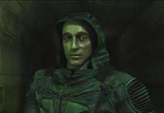
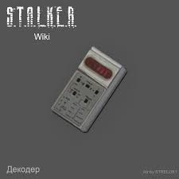

There could be any information, but I could not think of anything other than this.


Все начинается с того что по грузовику смерти ударяет молния и он переворачивается.Потом утром 1 Сталкер нашол грузовик обыскал трупы и нашел и отнес Сидоровичу(Торговцу) и он вас спас и тут начинается игра
Главный герой это Меченый  И у него нашли только 1 кпк с заданием 'Убить Стрелка'.Но в будущем становится известно что Стрелок это и есть он.
Можно дойти до 'Камня Желаний' Но это неправельная концовка.Можно найти декодер И дойти до 'Осоздание'.Можно к ним присоединится или уничтожить их